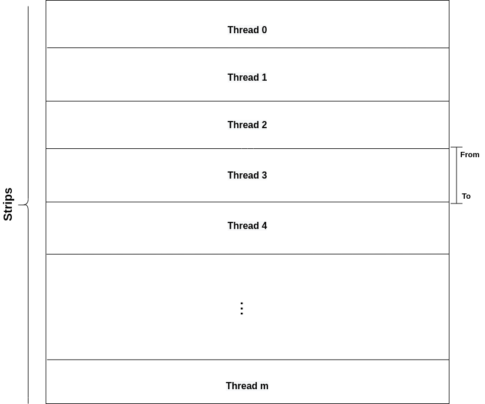
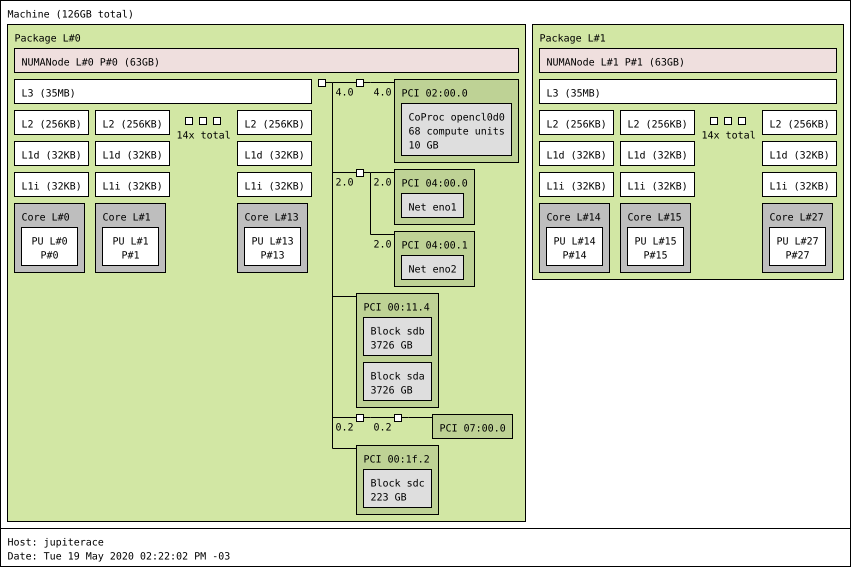
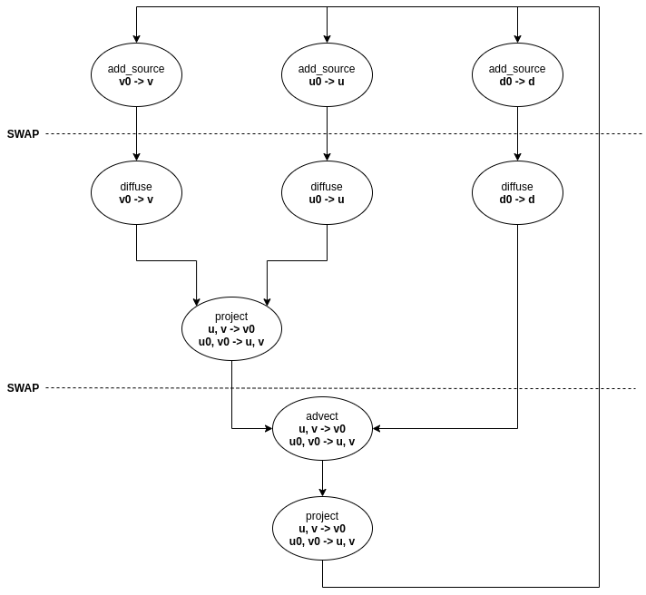
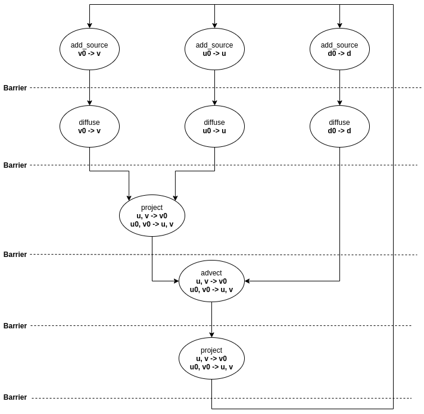
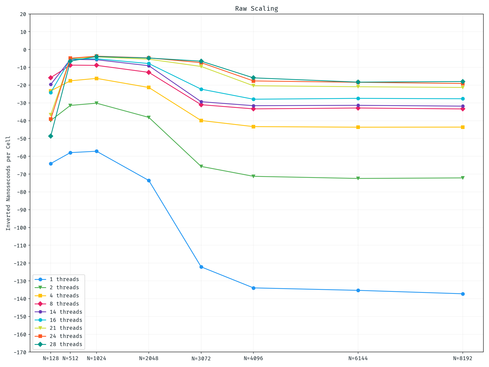
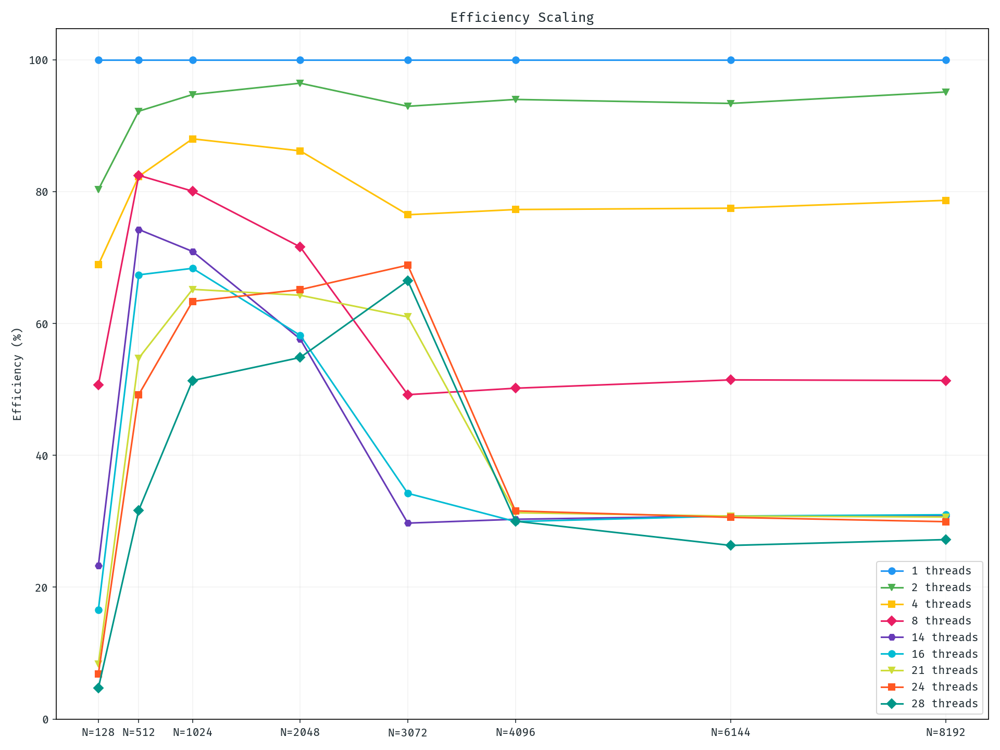

class: center, middle # Lab 3 - Open MP Parallel Computing Mateo de Mayo - Benjamín Ocampo --- class: center, middle ## Changes from E5-2620v3 to E5-2680v4 --- # Before getting covered in mud - Re-measure our previous results since they will not be comparable with future versions of the project due to the change of architecture from Haswell to Broadwell in zx81 and jupiterace. - Choose the new **baseline**. - Compare **stream**, **shload**, and without them. --- ## Changes from E5-2620v3 to E5-2680v4 - `shload` is now not worth it, it is better just directly read from memory - `stream` is now slower. (Note that reading and writing the same memory location is now **really** bad, and in haswell it seemed to be *"free"*) - `fload2x4` is notably worse (~10ns) than `fload8` as expected --- # Other changes According to Intel Optimization Manual (2.4.7) and Agner Fog Optimization Manual 3 (10.14): - Gathers have been improved (./vectortest now tells gathers are better than single loads) (14.16.4) - `fpmul` from 5 to 3 cycles - `PCLMULQDQ` is one cycle --- ## Changes from E5-2620v3 to E5-2680v4 <div align="center"> <img src="res/migrations_imgs/nspcellgraph__haswell_lab1 __vs__broadwell_lab1 .png" alt="drawing" style="width:500px;" /> </div> --- ## Changes from E5-2620v3 to E5-2680v4 <div align="center"> <img src="res/migrations_imgs/nspcellgraph__haswell_intrinsics_shload __vs__haswell_intrinsics_stream __vs__broadwell_fix_master_intrinsics __vs__broadwell_stream .png" alt="drawing" style="width:750px;" /> </div> - *(green vs all)* **stream** in haswell is faster than the other ones. (there wasn't enough time to soup up the code for broadwell) - *(yellow vs pink)* stream in broadwell is worse up to N=2048 but then is quite better. - **stream** in haswell needs a smaller N (in comparison to Broadwell) to show its profits against fix-master and change the results in favor of it. (Proportion between the groups *blue-green* and *yellow-pink*). --- ## Changes from E5-2620v3 to E5-2680v4 <div align="center"> <img src="res/migrations_imgs/nspcellgraph__haswell_ispc_shload __vs__haswell_intrinsics_shload __vs__broadwell_fix_master_ispc __vs__broadwell_fix_master_intrinsics .png" alt="drawing" style="width:750px;" /> </div> - Broadwell works worse from N=4096. - *(ispc vs intrinsics)* ISPC in Haswell is better for smaller cases, but that is not the case in Broadwell. Intrinsics is better in all cases. --- class: center, middle # Tidying up --- #Tidying up The file *solver.c* was changed in such a way that **advect**, **project** and **linsolve** were implemented by means of functions that share the same interfaces in intrinsics and ispc. Now, it is possible to compile either **intrinsics** or **ispc** code by means of Makefile rules. A non-vectorized version was also included (Useful in debugging). --- #Tidying up **Issue from lab2**: two versions of advect, one for the density and the other one for velocity, were added to increase the performance of **u** and **v** updates. It is hard to reuse and mantain! Now, **advect** not only updates **u** and **v**, but also **d** which stores the density values. **dens_step** and **vel_step** were merged in just one function called **step**. --- # Tidying up ```c void step(unsigned int n, float *d, float *u, float *v, float *d0, float *u0, float *v0, float diff, float visc, float dt) { // Density update add_source(n, d, d0, dt); SWAP(d0, d); diffuse(n, NONE, d, d0, diff, dt); SWAP(d0, d); // density advection will be done afterwards mixed with the velocity advection // Velocity update add_source(n, u, u0, dt); add_source(n, v, v0, dt); SWAP(u0, u); diffuse(n, VERTICAL, u, u0, visc, dt); SWAP(v0, v); diffuse(n, HORIZONTAL, v, v0, visc, dt); project(n, u, v, u0, v0); SWAP(u0, u); SWAP(v0, v); advect(n, d, u, v, d0, u0, v0, dt); project(n, u, v, u0, v0); } ``` --- # Thinking in strips In order to divide equally the work of updating the grid among several threads, we needed to find the best possible share-out. We found out that a strip-division, i.e, a set of rows of the same length for each thread it is the one that feets better. So, each thread receives a strip of size **ceil(N/threads)** <div align="center">  </div> --- # From-To division Two new parameters were included in the function **step** that indicate from which row a thread will start updating the grid and up to which one will do it All the procedures that steps calls were also modified to these signatures. --- class: center, middle # OpenMP --- # Topology and affinity <div align="center">  </div> - Indicate omp directives before running that threads had to be allocated close together, belonging to the same NUMA node (whenever it is possible). --- # Topology and affinity Memory allocation was performed in parallel sections in order to reduce the necessity of accessing memory allocated in another NUMA node (just in border cases). Since malloc allocates memory just when it is written and the function *clear_data* is the first one that initializes arrays *u*, *v*, and *d* we parallelized it. ```c static void clear_data(void) { int i, size = (N + 2) * (N + 2); #pragma omp parallel for for (i = 0; i < size; i++) { u[i] = v[i] = u_prev[i] = v_prev[i] = dens[i] = dens_prev[i] = 0.0f; } } ``` --- class: center, middle # React --- # React One main parallel section was in react. Since we needed to compute two maximum values, a reduction over a parallel for was used. ```c float max_velocity2 = 0.0f; float max_density = 0.0f; #pragma omp parallel for default(none) private(i) firstprivate(size, uu, vv, d) reduction(max: max_velocity2, max_density) for (i = 0; i < size; i++) { if (max_velocity2 < uu[i] * uu[i] + vv[i] * vv[i]) { max_velocity2 = uu[i] * uu[i] + vv[i] * vv[i]; } if (max_density < d[i]) { max_density = d[i]; } } ``` --- # React Since these values are used to update velocity and density, a parallel for collapse directive was applied in these cases. ```c if (max_velocity2 < 0.0000005f) { uu[IX(N / 2, N / 2)] = force * 10.0f; vv[IX(N / 2, N / 2)] = force * 10.0f; #pragma omp parallel for collapse(2) for (int y = 64; y < N; y += 64) for (int x = 64; x < N; x += 64) { uu[IX(x, y)] = force * 1000.0f * (N / 2 - y) / (N / 2); vv[IX(x, y)] = force * 1000.0f * (N / 2 - x) / (N / 2); } } if (max_density < 1.0f) { d[IX(N / 2, N / 2)] = source * 10.0f; #pragma omp parallel for collapse(2) for (int y = 64; y < N; y += 64) for (int x = 64; x < N; x += 64) d[IX(x, y)] = source * 1000.0f; } ``` --- class: center, middle # Step --- # Step In order to stay in parallel sections most of the time, the other main region is placed in *step* as we said before, so if we have m threads, they will be distributed along the entire grid, computing the function step from a certain region. ```c #pragma omp parallel firstprivate(dens, u, v, dens_prev, u_prev, v_prev, diff, visc, dt) { int threads = omp_get_num_threads(); int strip_size = (N + threads - 1) / threads; #pragma omp for for(int tid = 0; tid < threads; tid++){ int from = tid * strip_size + 1; int to = MIN((tid + 1) * strip_size + 1, N + 1); step(N, dens, u, v, dens_prev, u_prev, v_prev, diff, visc, dt, from, to); } } ``` --- # Step <div align="center">  </div> - Now, each thread has an strip of the grid to update. Nevertheless, some of the functions defined in step depends on certain strips assigned to a different thread, especially in the upper and lower borders. --- # Step <div align="center">  </div> --- # Step ```c void step(unsigned int n, float *d, float *u, float *v, float *d0, float *u0, float *v0, float diff, float visc, float dt, unsigned int from, unsigned int to) { add_source(n, d, d0, dt, from, to); add_source(n, u, u0, dt, from, to); add_source(n, v, v0, dt, from, to); #pragma omp barrier SWAP(d0, d); SWAP(u0, u); SWAP(v0, v); diffuse(n, NONE, d, d0, diff, dt, from, to); diffuse(n, VERTICAL, u, u0, visc, dt, from, to); diffuse(n, HORIZONTAL, v, v0, visc, dt, from, to); #pragma omp barrier project(n, u, v, u0, v0, from, to); #pragma omp barrier SWAP(d0, d); SWAP(u0, u); SWAP(v0, v); advect(n, d, u, v, d0, u0, v0, dt, from, to); #pragma omp barrier project(n, u, v, u0, v0, from, to); #pragma omp barrier } ``` --- class: center, middle # linsolve --- # linsolve ```c static void lin_solve(unsigned int n, boundary b, float *restrict x, const float *restrict x0, const float a, const float c, const unsigned int from, const unsigned int to) { unsigned int color_size = (n + 2) * ((n + 2) / 2); const float *red0 = x0; const float *blk0 = x0 + color_size; float *red = x; float *blk = x + color_size; for (unsigned int k = 0; k < 20; ++k) { lin_solve_rb_step(RED, n, a, c, red0, blk, red, from, to); lin_solve_rb_step(BLACK, n, a, c, blk0, red, blk, from, to); #pragma omp barrier set_bnd(n, b, x, from, to); } } ``` - It would reasonable that a barrier should be necessary between a call of both *lin_solve_rb_step* (again for boundary dependencies of neighbour strips). Fortunately, the simulation seems to work fine without it. - We could not get rid of the barrier before a set_bnd giving rise to a sincronization every iteration. It also leads to threads with a distance of just one iteration. --- class: center, middle # advect and project --- # advect and project In these functions we used symilar analyisis, keeping in mind dependencies. So, barrier-placement was not so hard to deal with. ```c static void advect(unsigned int n, float *d, float *u, float *v, const float *d0, const float *u0, const float *v0, float dt, const unsigned int from, const unsigned int to) { ... // Declaration of variables. advect_rb(RED, n, redd, redu, redv, redd0, redu0, redv0, d0, u0, v0, dt, from, to); advect_rb(BLACK, n, blkd, blku, blkv, blkd0, blku0, blkv0, d0, u0, v0, dt, from, to); #pragma omp barrier set_bnd(n, VERTICAL, u, from, to); set_bnd(n, HORIZONTAL, v, from, to); } ``` --- # advect and project In these functions we used symilar analyisis, keeping in mind dependencies. So, barrier-placement was not so hard to deal with. ```c static void project(unsigned int n, float *u, float *v, float *u0, float *v0, unsigned int from, unsigned int to) { ... // Declaration of variables project_rb_step1(n, RED, redu0, redv0, blku, blkv, from, to); project_rb_step1(n, BLACK, blku0, blkv0, redu, redv, from, to); #pragma omp barrier set_bnd(n, NONE, v0, from, to); set_bnd(n, NONE, u0, from, to); #pragma omp barrier lin_solve(n, NONE, u0, v0, 1, 4, from, to); #pragma omp barrier project_rb_step2(n, RED, redu, redv, blku0, from, to); project_rb_step2(n, BLACK, blku, blkv, redu0, from, to); #pragma omp barrier set_bnd(n, VERTICAL, u, from, to); set_bnd(n, HORIZONTAL, v, from, to); } ``` --- class: center, middle # Scaling --- ## Scaling <div align="center">  </div> --- ## Scaling <div align="center">  </div> --- class: center, middle # Final results --- ## lab1 vs lab3 (28 threads) <div align="center"> <img src="res/lab123_imgs/nspcellgraph__broadwell_lab1 __vs__broadwell_lab3 .png" alt="drawing" style="width:550px;" /> </div> --- ## lab2 vs lab3 (28 threads) <div align="center"> <img src="res/lab123_imgs/nspcellgraph__haswell_lab2_stream __vs__broadwell_lab2_shload __vs__broadwell_lab2_stream __vs__broadwell_lab3 .png" alt="drawing" style="width:780px;" /> </div> --- # References - Blaise, B. (2020) "OpenMP Tutorial" in *Lawrence Livermore National Laboratory*. May. 18, 2020. Available in <https://computing.llnl.gov/tutorials/openMP/> - Yliluoma, J. (2007) "Guide into OpenMP: Easy multithreading programming for C++". Available in <https://bisqwit.iki.fi/story/howto/openmp/> - Lameter, C. (2013) "NUMA (Non-Uniform Memory Access): An Overview". in *acmqueue*. August 9, 2013. Available in <https://queue.acm.org/detail.cfm?id=2513149>